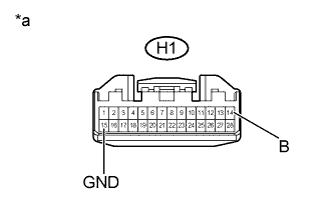

DTC B1591 No Response from Audio HU |
DTC B15D1 Audio HU Disconnected |
| DTC Code | DTC Detection Condition | Trouble Area |
| B1591 | Within the time-out period, there is no response from the radio receiver assembly to the following requests from the master unit:
|
|
| B15D1*1 | Either condition is met:
|
| 1.CHECK OPTIONAL COMPONENTS (INCLUDING ASSOCIATED WIRING) |
Check for optional components.
Check that optional components (including associated wiring) which generate radio waves are not installed.
| Result | Proceed to |
| Optional components (including associated wiring) are installed | A |
| Optional components (including associated wiring) are not installed | B |
|
| ||||
| A | |
| 2.REMOVE OPTIONAL COMPONENTS (INCLUDING ASSOCIATED WIRING) |
Remove the optional components (including associated wiring).
| NEXT | |
| 3.CHECK FOR DTC |
Clear the DTCs (Click here).
Check for DTCs and check if the same trouble occurs again.
|
| ||||
| OK | ||
| ||
| 4.CHECK HARNESS AND CONNECTOR (RADIO RECEIVER ASSEMBLY POWER SOURCE) |
|  |
Disconnect the H1 radio receiver assembly connector.
Measure the resistance according to the value(s) in the table below.
| Tester Connection | Condition | Specified Condition |
| H1-15 (GND) - Body ground | Always | Below 1 Ω |
Measure the voltage according to the value(s) in the table below.
| Tester Connection | Condition | Specified Condition |
| H1-14 (B) - H1-15 (GND) | Always | 11 to 14 V |
| *a | Front view of wire harness connector (to Radio Receiver Assembly) |
|
| ||||
| OK | |
| 5.CHECK HARNESS AND CONNECTOR (RADIO RECEIVER - STEREO COMPONENT AMPLIFIER) |
Disconnect the H1 radio receiver assembly connector.
Disconnect the R34 stereo component amplifier assembly connector.
Measure the resistance according to the value(s) in the table below.
| Tester Connection | Condition | Specified Condition |
| H1-9 (MI+) - R34-6 (MO+) | Always | Below 1 Ω |
| H1-23 (MI-) - R34-12 (MO-) | Always | Below 1 Ω |
| H1-10 (SLDI) - R34-11 (SLDO) | Always | Below 1 Ω |
| H1-9 (MI+) - Body ground | Always | 10 kΩ or higher |
| H1-23 (MI-) - Body ground | Always | 10 kΩ or higher |
| H1-10 (SLDI) - Body ground | Always | 10 kΩ or higher |
| Result | Proceed to |
| OK (w/ Rear Seat Entertainment System) | A |
| OK (w/o Rear Seat Entertainment System) | B |
| NG | C |
|
| ||||
|
| ||||
| A | |
| 6.CHECK HARNESS AND CONNECTOR (RADIO RECEIVER - MULTI-DISPLAY CONTROLLER) |
Disconnect the H1 radio receiver assembly connector.
Disconnect the H16 multi-display controller sub-assembly connector.
Measure the resistance according to the value(s) in the table below.
| Tester Connection | Condition | Specified Condition |
| H1-11 (MO+) - H16-1 (MI+) | Always | Below 1 Ω |
| H1-25 (MO-) - H16-2 (MI-) | Always | Below 1 Ω |
| H1-24 (SLDI) - H16-3 (SLDI) | Always | Below 1 Ω |
| H1-11 (MO+) - Body ground | Always | 10 kΩ or higher |
| H1-25 (MO-) - Body ground | Always | 10 kΩ or higher |
| H1-24 (SLDI) - Body ground | Always | 10 kΩ or higher |
|
| ||||
| OK | |
| 7.REPLACE RADIO RECEIVER ASSEMBLY |
Replace the radio receiver assembly (Click here).
Clear the DTCs (Click here).
Check for DTCs and check if the same trouble occurs again.
|
| ||||
| OK | ||
| ||
| 8.CHECK HARNESS AND CONNECTOR (RADIO RECEIVER - DISPLAY AND NAVIGATION MODULE DISPLAY) |
Disconnect the H1 radio receiver assembly connector.
Disconnect the H2 display and navigation module display connector.
Measure the resistance according to the value(s) in the table below.
| Tester Connection | Condition | Specified Condition |
| H1-11 (MO+) - H2-1 (MI+) | Always | Below 1 Ω |
| H1-25 (MO-) - H2-5 (MI-) | Always | Below 1 Ω |
| H1-24 (SLDI) - H2-2 (SLDI) | Always | Below 1 Ω |
| H1-11 (MO+) - Body ground | Always | 10 kΩ or higher |
| H1-25 (MO-) - Body ground | Always | 10 kΩ or higher |
| H1-24 (SLDI) - Body ground | Always | 10 kΩ or higher |
|
| ||||
| OK | |
| 9.REPLACE RADIO RECEIVER ASSEMBLY |
Replace the radio receiver assembly (Click here).
Clear the DTCs (Click here).
Check for DTCs and check if the same trouble occurs again.
|
| ||||
| OK | ||
| ||